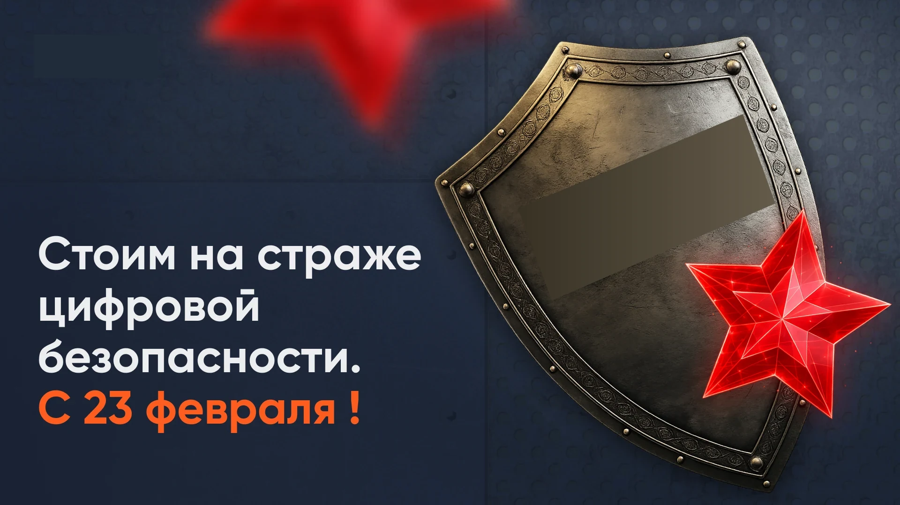
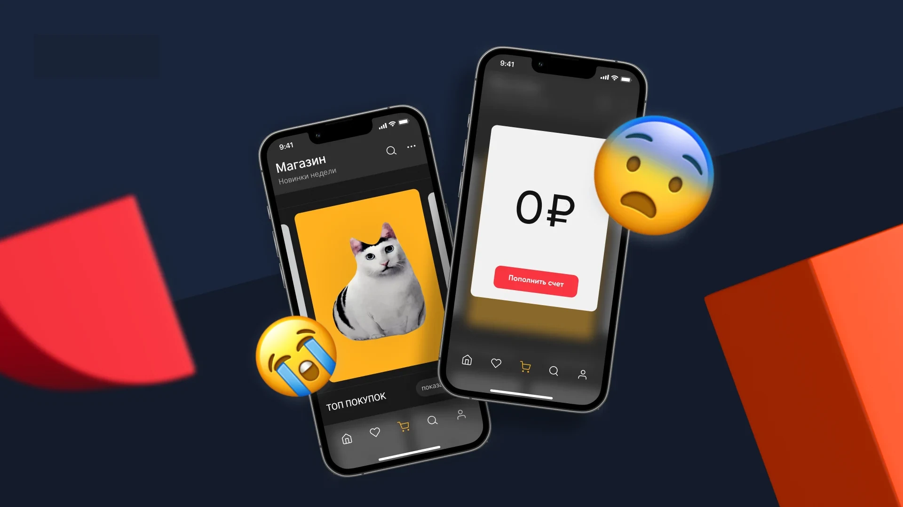
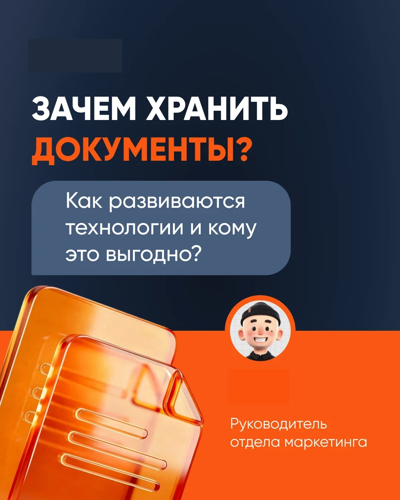
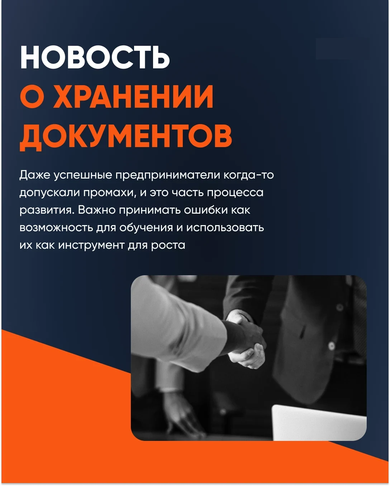
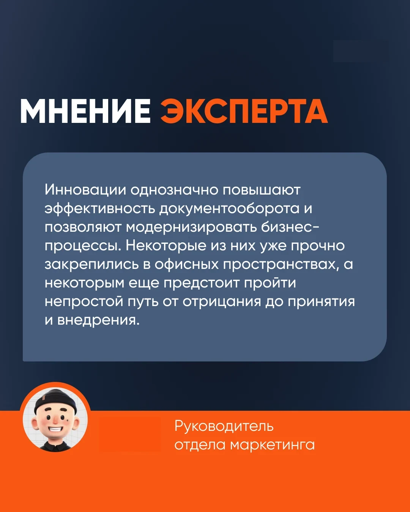

OFF GROUP
Коммуникационный дизайн · Графический дизайн обложек статей
Задача
Разработать графику для публикаций OFF GROUP и обложки статей, сохранив узнаваемый стиль бренда.
Графика для публикаций
Для каждого материала я подбирала свой визуальный образ: щит для темы цифровой безопасности, экраны смартфонов и объёмные эмодзи для сюжета о покупках в приложении.


Переосмысление дизайн-системы
В этих трёх вертикальных макетах я по-новому выстроила композицию и иерархию текста для обложки статьи, новости и экспертной цитаты. Сохранила обязательные элементы существующей дизайн-системы OFF GROUP: оранжевую линию, тёмно-синий и оранжевый цвета, а также 3D-элементы.


